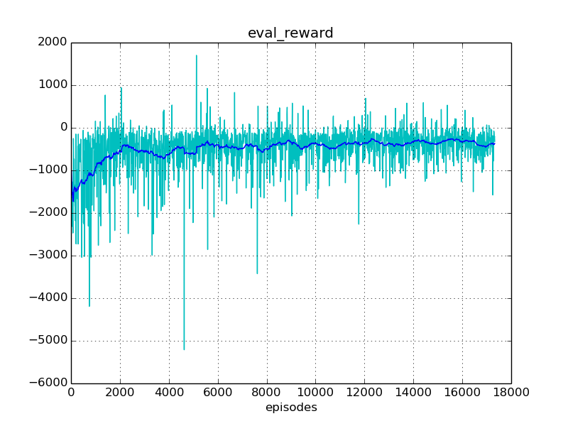
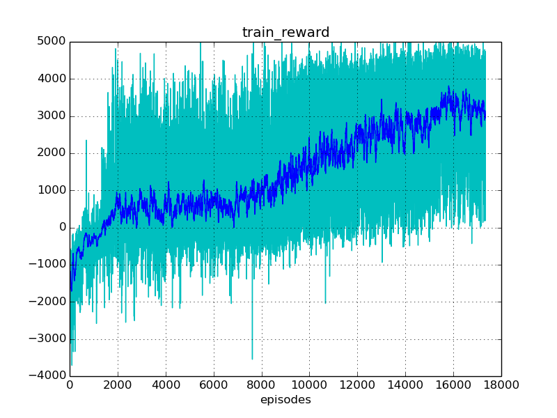
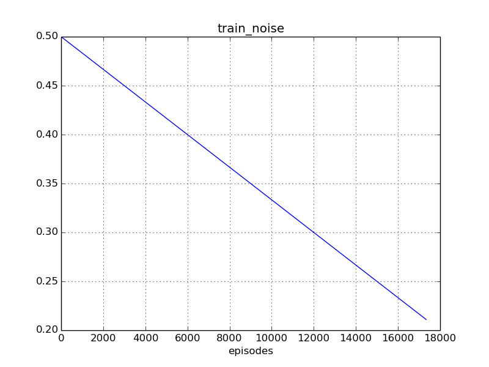
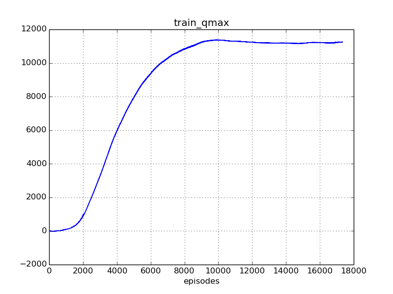

Experiment #train_tentacle
Reward: -369
Qmax: 11246
Left: 04:53:00 (58%)
Report time: 2017-01-15 18:37:43
Host name: bernard
Configuration
Experiment:
exp.base_path: experiments/
exp.episodes: 30000
exp.id: train_tentacle
exp.logger_class: core.logger.Logger
exp.mind_class: tf.mind.TensorflowMind
exp.platform_class: tf.platform.TensorflowPlatform
exp.save_every_episodes: 200
exp.steps: 50
exp.world_class: zoo.scorpion.world.ScorpionWorld
Algorithm:
alg.batch_size: 128
alg.buffer_size: 100000
alg.noise_rate_method: linear_05_00
alg.noise_sigma: 0.1
alg.noise_theta: 0.01
Mind:
mind.evaluate_every_episodes: 10
Environment:
env.assets: ./assets/
env.episod_jpos_method: jpos_random_target
env.frame_skip: 2
env.id: Zoo:Mujoco:Scorpion-v1
env.init_every_episods: 10
env.reward_method: tentacle_reward
env.step_jpos_method: jpos_do_nothing
env.target_range_xz: [[-0.7, 0.7], [0.5, 1.0]]
env.world.agents: ['scorpion', 'ball']
env.world.scorpion.agents: ['tentacle', 'target']
env.world.scorpion.algorithm:
env.world.scorpion.class: zoo.scorpion.scorpion.ScorpionAgent
env.world.scorpion.inputs: ['ball_x', 'ball_y', 'ball_z']
env.world.scorpion.tentacle.algorithm:
env.world.scorpion.tentacle.inputs: ['target_x', 'target_z']
Reporting:
report.diagram_mean_frame: 50
report.refresh_html_every_secs: 30
report.summary_every_episodes: 20
report.write_every_episodes: 15
Instances
Experiment:
id: train_tentacle
work_path: experiments/train_tentacle
platform: TensorflowPlatform
world: ScorpionWorld:
env_id: Zoo:Mujoco:Scorpion-v1
model_path: ./assets/world.xml
total_act_dim: 6
env: ScorpionEnv:
model_path: /home/roman-ml/prj/rmus/zoo/zoo/scorpion/experiments/train_tentacle/environment/env_model.xml
sensors:
world.scorpion.sensor_head_pos [1]
world.scorpion.sensor_head_vel [1]
world.scorpion.tentacle.sensor_s1_pos [1]
world.scorpion.tentacle.sensor_s1_vel [1]
world.scorpion.tentacle.sensor_s2_pos [1]
world.scorpion.tentacle.sensor_s2_vel [1]
world.scorpion.tentacle.sensor_s3_pos [1]
world.scorpion.tentacle.sensor_s3_vel [1]
world.scorpion.target.sensor_x [1]
world.scorpion.target.sensor_z [1]
world.ball.sensor_x [1]
world.ball.sensor_y [1]
world.ball.sensor_z [1]
world.ball.sensor_vx [1]
world.ball.sensor_vy [1]
world.ball.sensor_vz [1]
world.ball.sensor_accelerometer [3]
actuators:
world.scorpion.actuator_head [-10 +10]
world.scorpion.actuator_target_x [-2 +2]
world.scorpion.actuator_target_z [-1 +2]
world.scorpion.tentacle.actuator_s1 [-2000 +2000]
world.scorpion.tentacle.actuator_s2 [-1500 +1500]
world.scorpion.tentacle.actuator_s3 [-500 +500]
sensors:
no
actuators:
no
observations:
sensor: world.scorpion.sensor_head_pos=[-1.21e-17]
sensor: world.scorpion.sensor_head_vel=[-2.55e-17]
inputs: world.scorpion.inputs_ball_x=[-2.24]
inputs: world.scorpion.inputs_ball_y=[+1.11e-15]
inputs: world.scorpion.inputs_ball_z=[-4.8]
sensor: world.scorpion.tentacle.sensor_s1_pos=[-0.404]
sensor: world.scorpion.tentacle.sensor_s1_vel=[-2.03]
sensor: world.scorpion.tentacle.sensor_s2_pos=[-0.138]
sensor: world.scorpion.tentacle.sensor_s2_vel=[+4.07]
sensor: world.scorpion.tentacle.sensor_s3_pos=[+0.825]
sensor: world.scorpion.tentacle.sensor_s3_vel=[-0.604]
inputs: world.scorpion.tentacle.inputs_target_x=[-0.672]
inputs: world.scorpion.tentacle.inputs_target_z=[+0.976]
sensor: world.scorpion.target.sensor_x=[-0.672]
sensor: world.scorpion.target.sensor_z=[+0.976]
sensor: world.ball.sensor_x=[-2.24]
sensor: world.ball.sensor_y=[+1.11e-15]
sensor: world.ball.sensor_z=[-4.8]
sensor: world.ball.sensor_vx=[-1.48]
sensor: world.ball.sensor_vy=[+9.89e-16]
sensor: world.ball.sensor_vz=[-0.00566]
sensor: world.ball.sensor_accelerometer=[+2.81,-1.65e-16,+25.7]
mind: TensorflowMind:
algorithm: DummyAlgorithm:
obs_dim: 24
act_dim: 0
agents:
world.scorpion: ScorpionAgent:
model_path: ./assets/scorpion.xml
alg_obs: [-1.2084511523040808e-17, -2.5456604018719323e-17, -2.2358124903779615, 1.1093264079489907e-15, -4.7990199931833537, -0.40354654106985099, -2.0271932840831379, -0.1382777912123575, 4.0735177563969609, 0.82464946347735668, -0.60421556166768542, -0.67246526228820147, 0.97572310659127726, -0.67246526228820147, 0.97572310659127726]
alg_obs_dim: 15
alg_act_dim: 3
sensors:
world.scorpion.sensor_head_pos [1]
world.scorpion.sensor_head_vel [1]
actuators:
world.scorpion.actuator_head [-10 +10]
world.scorpion.actuator_target_x [-2 +2]
world.scorpion.actuator_target_z [-1 +2]
observations:
sensor: world.scorpion.sensor_head_pos=[-1.21e-17]
sensor: world.scorpion.sensor_head_vel=[-2.55e-17]
inputs: world.scorpion.inputs_ball_x=[-2.24]
inputs: world.scorpion.inputs_ball_y=[+1.11e-15]
inputs: world.scorpion.inputs_ball_z=[-4.8]
sensor: world.scorpion.tentacle.sensor_s1_pos=[-0.404]
sensor: world.scorpion.tentacle.sensor_s1_vel=[-2.03]
sensor: world.scorpion.tentacle.sensor_s2_pos=[-0.138]
sensor: world.scorpion.tentacle.sensor_s2_vel=[+4.07]
sensor: world.scorpion.tentacle.sensor_s3_pos=[+0.825]
sensor: world.scorpion.tentacle.sensor_s3_vel=[-0.604]
inputs: world.scorpion.tentacle.inputs_target_x=[-0.672]
inputs: world.scorpion.tentacle.inputs_target_z=[+0.976]
sensor: world.scorpion.target.sensor_x=[-0.672]
sensor: world.scorpion.target.sensor_z=[+0.976]
mind: TensorflowMind:
algorithm: DummyAlgorithm:
obs_dim: 15
act_dim: 3
agents:
world.scorpion.tentacle: MujocoAgent >>>> training <<<<:
model_path: ./assets/tentacle.xml
alg_obs: [-0.40354654106985099, -2.0271932840831379, -0.1382777912123575, 4.0735177563969609, 0.82464946347735668, -0.60421556166768542, -0.67246526228820147, 0.97572310659127726]
alg_obs_dim: 8
alg_act_dim: 3
sensors:
world.scorpion.tentacle.sensor_s1_pos [1]
world.scorpion.tentacle.sensor_s1_vel [1]
world.scorpion.tentacle.sensor_s2_pos [1]
world.scorpion.tentacle.sensor_s2_vel [1]
world.scorpion.tentacle.sensor_s3_pos [1]
world.scorpion.tentacle.sensor_s3_vel [1]
actuators:
world.scorpion.tentacle.actuator_s1 [-2000 +2000]
world.scorpion.tentacle.actuator_s2 [-1500 +1500]
world.scorpion.tentacle.actuator_s3 [-500 +500]
observations:
sensor: world.scorpion.tentacle.sensor_s1_pos=[-0.404]
sensor: world.scorpion.tentacle.sensor_s1_vel=[-2.03]
sensor: world.scorpion.tentacle.sensor_s2_pos=[-0.138]
sensor: world.scorpion.tentacle.sensor_s2_vel=[+4.07]
sensor: world.scorpion.tentacle.sensor_s3_pos=[+0.825]
sensor: world.scorpion.tentacle.sensor_s3_vel=[-0.604]
inputs: world.scorpion.tentacle.inputs_target_x=[-0.672]
inputs: world.scorpion.tentacle.inputs_target_z=[+0.976]
mind: TensorflowMind:
algorithm: DDPG_PeterKovacs
obs_dim: 8
act_dim: 3
buffer: ReplayBuffer:
buffer_size: 100000
num_experiences: 100000
episode: 17339
agents:
no
world.scorpion.target: MujocoAgent:
model_path: ./assets/target.xml
alg_obs: [-0.67246526228820147, 0.97572310659127726]
alg_obs_dim: 2
alg_act_dim: 0
sensors:
world.scorpion.target.sensor_x [1]
world.scorpion.target.sensor_z [1]
actuators:
no
observations:
sensor: world.scorpion.target.sensor_x=[-0.672]
sensor: world.scorpion.target.sensor_z=[+0.976]
mind: TensorflowMind:
algorithm: DummyAlgorithm:
obs_dim: 2
act_dim: 0
agents:
no
world.ball: MujocoAgent:
model_path: ./assets/ball.xml
alg_obs: [-2.2358124903779615, 1.1093264079489907e-15, -4.7990199931833537, -1.4765031924738909, 9.8872698312760388e-16, -0.0056623359263113134, 2.8119161160891992, -1.6478783052126734e-16, 25.659266229423224]
alg_obs_dim: 9
alg_act_dim: 0
sensors:
world.ball.sensor_x [1]
world.ball.sensor_y [1]
world.ball.sensor_z [1]
world.ball.sensor_vx [1]
world.ball.sensor_vy [1]
world.ball.sensor_vz [1]
world.ball.sensor_accelerometer [3]
actuators:
no
observations:
sensor: world.ball.sensor_x=[-2.24]
sensor: world.ball.sensor_y=[+1.11e-15]
sensor: world.ball.sensor_z=[-4.8]
sensor: world.ball.sensor_vx=[-1.48]
sensor: world.ball.sensor_vy=[+9.89e-16]
sensor: world.ball.sensor_vz=[-0.00566]
sensor: world.ball.sensor_accelerometer=[+2.81,-1.65e-16,+25.7]
mind: TensorflowMind:
algorithm: DummyAlgorithm:
obs_dim: 9
act_dim: 0
agents:
no
logger: Logger:
saved_time: 00:00:00
train_history: 17340
eval_history: 1733
reporter: Reporter:
html_path: /home/roman-ml/prj/rmus/zoo/zoo/scorpion/experiments/train_tentacle/reporter/report.html
Progress
Episodes: 17340
Steps: 867000
Total time: 11:34:19
spent: 06:41:19 (57%)
left: 04:53:00
Finish: 23:30:43 2017-01-15
Performance: 0.72 per sec
Results
Train reward: +3031.35
Eval reward: -368.86
Diagrams



